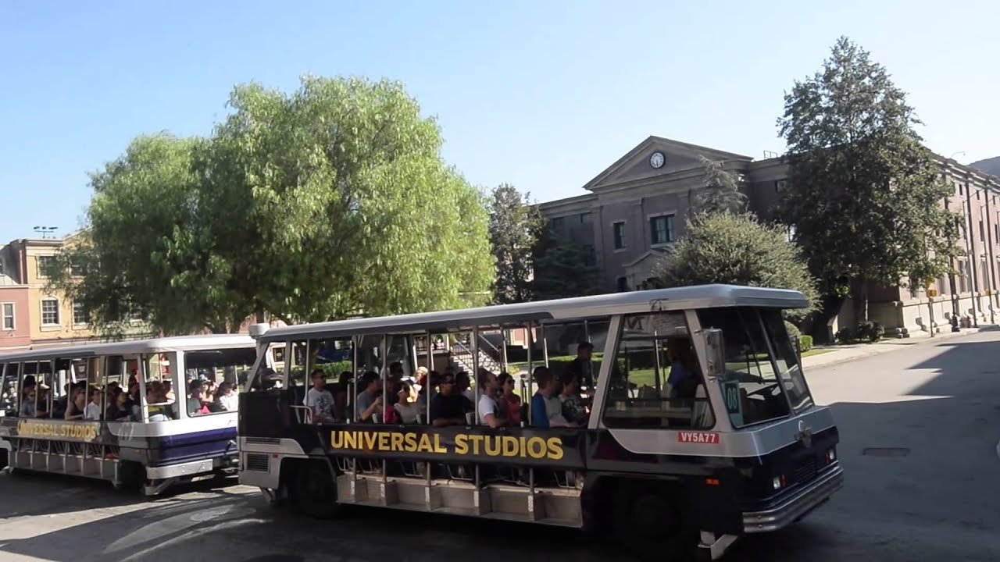
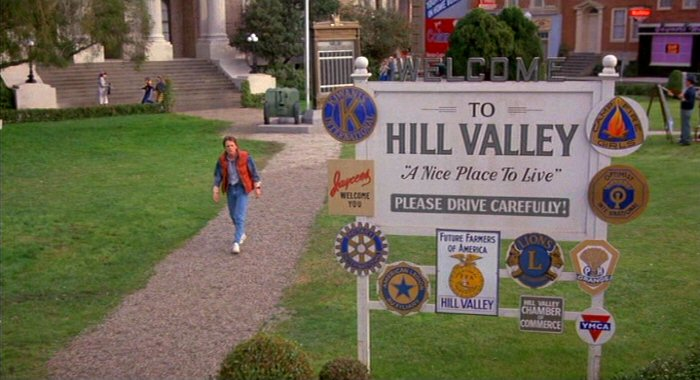

|  |  |
Courthouse Square is a backlot located at the Universal Studios Lot in Universal City, California. The set is composed of several facades that form an archetypal American town square with a courthouse as its centerpiece. The set was built for the 1948 film An Act of Murder, and is best known for being featured as downtown Hill Valley in the Back to the Future trilogy, as well as Kingston Falls in the Gremlins series.
The nearest airport to Universal-Studios-Hollywood is Burbank (BUR) Airport which is 4.1 miles away. Other nearby airports include Los Angeles (LAX) (13.9 miles), Hawthorne (HHR) (15.4 miles), Santa Ana (SNA) (42.7 miles) and Ontario/San Bernardino (ONT) (43.8 miles).